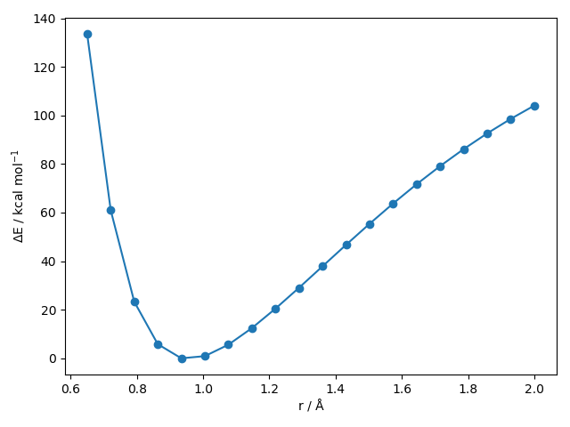
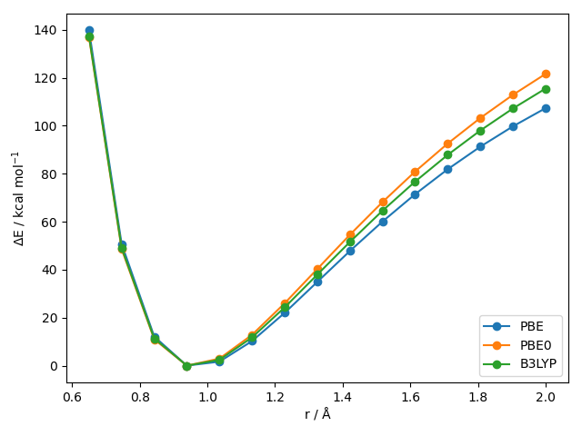
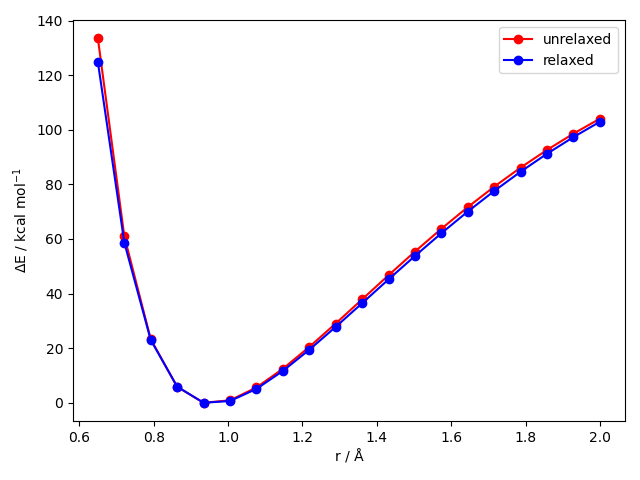

1D PES Generation¶
autodE allows for both potential energy surface (PES) to be constructed where other degrees of freedom are frozen (unrelaxed) or allowed to optimise (relaxed).
Unrelaxed¶
For the O-H dissociation curve in H2O at the XTB level
from autode import Molecule
from autode.calculation import Calculation
from autode.methods import XTB
import matplotlib.pyplot as plt
import numpy as np
# Initialise the electronic structure method (XTB)
xtb = XTB()
water = Molecule(name='H2O', smiles='O')
# water.atoms = [[O, x, y, z], [H, x', y', z'], [H, x'', y'', z'']]
# Array of distances (Å) to calculate the energy for
rs = np.linspace(0.65, 2.0, num=20)
# List of energies to be populated
energies = []
for r in rs:
o_atom, h_atom = water.atoms[:2]
curr_r = water.distance(0, 1) # current O-H distance
# Shift the hydrogen atom to the required distance
# vector = (h_atom.coord - o_atom.coord) / curr_r * (r - curr_r)
vector = (h_atom.coord - o_atom.coord) * (r/curr_r - 1)
h_atom.translate(vector)
# Set up and run the calculation
calc = Calculation(name=f'H2O_scan_{r:.2f}',
molecule=water,
method=xtb,
keywords=xtb.keywords.sp)
calc.run()
# Get the potential energy from the calculation
energy = calc.get_energy()
energies.append(energy)
# Plot the relative energy against the distance. 627.5 kcal mol-1 Ha-1
rel_energies = 627.5 * np.array([e - min(energies) for e in energies])
plt.plot(rs, rel_energies, marker='o')
plt.ylabel('ΔE / kcal mol$^{-1}$')
plt.xlabel('r / Å')
plt.savefig('OH_PES_unrelaxed.png')
Out (OH_PES_unrelaxed.png):
For the same O-H 1D PES scan using a selection of different DFT methods
from autode import Molecule, SinglePointKeywords
from autode.calculation import Calculation
from autode.methods import ORCA
import matplotlib.pyplot as plt
import numpy as np
# Initialise the electronic structure method and a list of different
# single point energy keywords
orca = ORCA()
keywords_list = {'PBE': SinglePointKeywords(['PBE', 'def2-SVP']),
'PBE0': SinglePointKeywords(['PBE0', 'def2-SVP']),
'B3LYP': SinglePointKeywords(['B3LYP', 'def2-SVP'])}
water = Molecule(name='H2O', smiles='O')
# For the three different DFT functionals calculate the PES and plot the line
for dft_name, keywords in keywords_list.items():
# Create arrays for OH distances and their energies
rs = np.linspace(0.65, 2.0, num=15)
energies = []
# Calculate the energy array
for r in rs:
o_atom, h_atom = water.atoms[:2]
curr_r = water.distance(0, 1)
vector = (h_atom.coord - o_atom.coord) * (r/curr_r - 1)
h_atom.translate(vector)
# Set up and run the calculation
calc = Calculation(name=f'H2O_scan_{r:.2f}',
molecule=water,
method=orca,
keywords=keywords)
calc.run()
# Get the potential energy from the calculation
energy = calc.get_energy()
energies.append(energy)
# Plot the relative energy against the distance. 627.5 kcal mol-1 Ha-1
rel_energies = 627.5 * np.array([e - min(energies) for e in energies])
plt.plot(rs, rel_energies, marker='o', label=dft_name)
# Add labels to the plot and save the figure
plt.ylabel('ΔE / kcal mol$^{-1}$')
plt.xlabel('r / Å')
plt.legend()
plt.savefig('OH_PES_unrelaxed2.png')
Out (OH_PES_unrelaxed2.png):
Relaxed¶
autodE provides two ways of generating relaxed PESs the first in a similar vain to the above is performing optimisations with distance constraints
from autode import Molecule
from autode.calculation import Calculation
from autode.methods import XTB
import matplotlib.pyplot as plt
import numpy as np
# Initialise the electronic structure method (XTB)
xtb = XTB()
water = Molecule(name='H2O', smiles='O')
rs = np.linspace(0.65, 2.0, num=20)
# List of energies to be populated for the single point (unrelaxed)
# and constrained optimisations (relaxed) calculations
sp_energies, opt_energies = [], []
for r in rs:
o_atom, h_atom = water.atoms[:2]
curr_r = water.distance(0, 1) # current O-H distance
# Shift the hydrogen atom to the required distance
# vector = (h_atom.coord - o_atom.coord) / curr_r * (r - curr_r)
vector = (h_atom.coord - o_atom.coord) * (r/curr_r - 1)
h_atom.translate(vector)
# Set up and run the single point energy evaluation
sp = Calculation(name=f'H2O_scan_unrelaxed_{r:.2f}',
molecule=water, method=xtb, keywords=xtb.keywords.sp)
sp.run()
sp_energies.append(sp.get_energy())
# Set up the constrained optimisation calculation where the distance
# constraints are given as a dictionary keyed with a tuple of atom indexes
# with the distance as the value
opt = Calculation(name=f'H2O_scan_relaxed_{r:.2f}',
molecule=water,
method=xtb,
keywords=xtb.keywords.low_opt,
distance_constraints={(0, 1): r})
opt.run()
opt_energies.append(opt.get_energy())
# Plot the relative energy against the distance. 627.5 kcal mol-1 Ha-1
rel_sp_energies = 627.5 * np.array([e - min(sp_energies) for e in sp_energies])
plt.plot(rs, rel_sp_energies, marker='o', label='unrelaxed', c='r')
# And the same for the relaxed points
rel_opt_energies = 627.5 * np.array([e - min(opt_energies) for e in opt_energies])
plt.plot(rs, rel_opt_energies, marker='o', label='relaxed', c='b')
plt.ylabel('ΔE / kcal mol$^{-1}$')
plt.xlabel('r / Å')
plt.legend()
plt.savefig('OH_PES_comparison.png')
Out (OH_PES_comparison.png):
Alternatively, a 1D PES can be generated using a PES1d object.
from autode import Molecule
from autode.pes.pes_1d import PES1d
from autode.methods import XTB
import numpy as np
# Initialise the electronic structure method (XTB) and water molecule
xtb = XTB()
water = Molecule(name='H2O', smiles='O')
# Initialise a potential energy surface where the reactant and product is
# the same. A product is required to call pes.products_made() to check products
# are generated somewhere on the surface via graph isomorphism
pes = PES1d(reactant=water, product=water,
rs=np.linspace(0.65, 2.0, num=20),
r_idxs=(0, 1))
# Calculate the potential energy surface at the XTB level optimising
# all degrees of freedom other than the O-H distance
pes.calculate(name='OH_PES',
method=xtb,
keywords=xtb.keywords.low_opt)
# Print the r values and energies
for i in range(pes.n_points):
print(f'{pes.rs[i, 0]:.3f} {pes.species[i].energy:.4f}')
Out:
r (Å) E (Ha)
0.650 -4.8712
0.721 -4.9765
0.792 -5.0333
0.863 -5.0606
0.934 -5.0700
1.005 -5.0690
1.076 -5.0619
1.147 -5.0514
1.218 -5.0391
1.289 -5.0257
1.361 -5.0119
1.432 -4.9980
1.503 -4.9843
1.574 -4.9710
1.645 -4.9584
1.716 -4.9464
1.787 -4.9351
1.858 -4.9246
1.929 -4.9149
2.000 -4.9060